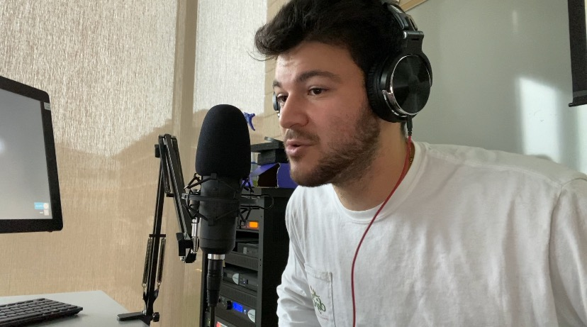
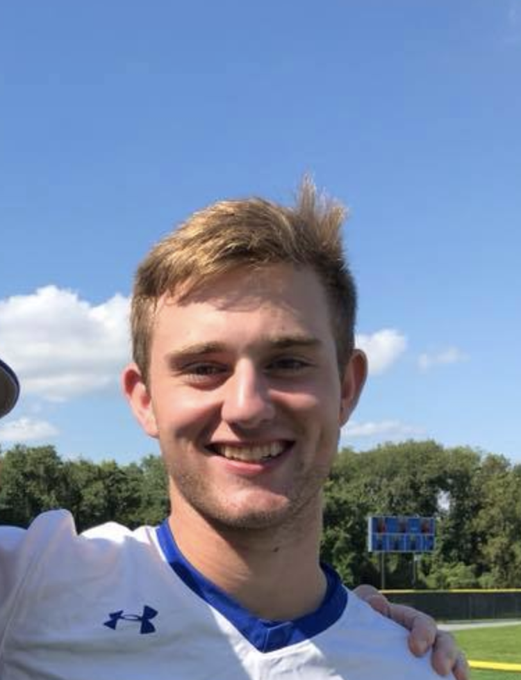

Brandon Mintz is the founder of Mets Updates and the main host of the Mintz on Mets podcast. He is studying Broadcast and Digital Journalism at Syracuse University.

Michael Cole is a Sports Journalism major at Franklin and Marshall College in Lancaster, Pennsylvania. He is the starting catcher for the D3 Franklin and Marshall baseball team. Michael is the co-host of the Mintz on Mets podcast as well as the Mets Updates head videographer.